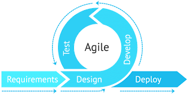

Every engineer has a set of tools in their belt. For software engineers, your development environment is one of them. Over the course of this semester, we used the IntelliJ Integrated Development Environment (IDE) for all our coursework. I’ve previously used other IDEs such as Visual Studio Code and PyCharm but never to the extent that we used IntelliJ. This course required me to familiarize myself with shortcuts to make my development a lot more efficient. At first, it was quite the hassle to try and learn all the shortcuts but I picked up on the ones that I used often. These included the shortcuts to find and replace words in a file, quickly open up the terminal, search for instances of specific code in a directory, and use the soft-wrap function. This might have saved me only one second at a time but it allowed me to be more productive and get into a “flow state” when I was coding. Development environments are so powerful and provide functionality that helped improve my code as well. When needed, I was easily able to install plugins such as GitHub CoPilot and support for C and C++. GitHub CoPilot really helped speed up my development process since it was able to autocomplete functions for me instead of me having to write it all out. Additionally, I learned to take advantage of other features such as the SSH feature in Visual Studio Code. I had a side project I was working on that required me to SSH into another local machine (a Jetson Nano). The machine I was remoting into was a Linux based system so being able to SSH into it using Visual Studio Code allowed me to view the machine’s whole file system more pleasantly. Overall this course taught me the importance of being comfortable with my development environment in regards to efficient software development.

Agile project management is something that I’ve done before in past internship and project experience so it was great that I was able to revisit this in the course. Agile based development is the idea that we iteratively release working versions of our code and receive feedback from our customers or other cross-functional teams to constantly improve the application. In terms of project management, we used issue driven project management by using GitHub projects. Issues are a set of tasks that are to be completed within the set time frame and can be given different weights or difficulty levels based on the task. For this class, we had sets of milestones that had a certain amount of issues to be completed by the respective team members. This is common practice in the actual workplace. I’ve typically done work in 2 week sprints and will have backlog refinement at the end of it. In software engineering, this style of development is really important to see the workflow of the team and if individual members are actively getting their work done. In my past internships, I had daily standups where team members would update the team on the issue they were working on and go over any blockers that they were facing. This style of project management definitely applies to software development outside of web applications. For example, in a research project, there could be one milestone set on conducting literature reviews, another milestone on developing your procedure, another milestone on developing your method and collecting results, and finally a milestone on drafting and finalizing a paper. Each milestone would have their respective tasks or issues that can be worked on. Agile development is super useful and practical as opposed to the original waterfall approach where everything is developed and then deployed with no testing or feedback loop along the way.